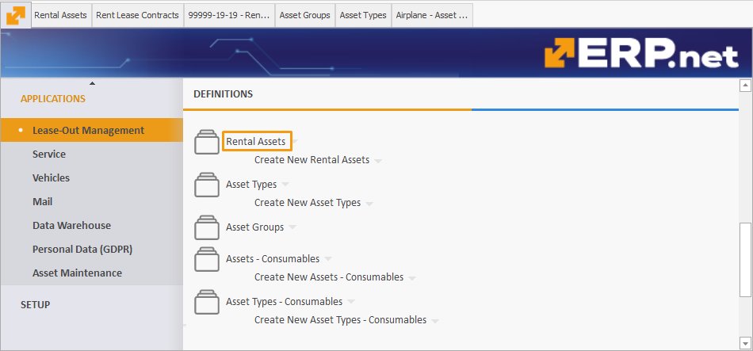

Time Period Types
The Time Period Type field in the Rental Asset definition includes several options:
Full Days
This method calculates the total number of complete days a rental asset is used, without considering specific reception and delivery hours.
It offers a straightforward calculation of full calendar days.
24-Hour Periods
This method counts started 24-hour periods, taking into account the reception and delivery times specified in the protocols.
If protocols are not used and only a Rent Lease Contract is present, it functions like the Full Days method, providing flexibility based on available documentation.
Overnight Stays
This option counts the number of overnight stays or shifts, giving a clear picture of the actual rental usage for nights spent.
Months
This value calculates the number of months from the selected start date to the same date of the following month.
It is ideal for long-term rentals, providing an easy way to calculate monthly rental periods.
Default Time Period Type for Rental Assets
When managing Rental Assets in ERP.net, you can assign a default time period type during creation or editing.
Navigation
Navigate to Applications -> Rental -> Rental Assets.
You can open an existing rental asset by clicking on its name or creating a new one.

Assign a Time Period Type
After opening a Rental Asset, find the Time Period Type field and choose an option from the dropdown menu.

Assigning a time period type to a Rental Asset ensures:
- When Rent Lease Contracts are created for the Rental Asset, the assigned time period type is automatically applied by default.
- You can still adjust the time period type for individual Rent Lease Contracts as necessary.

Number of Periods field
In a Rent Lease Contract, the Number of Periods field indicates how many units of the selected Time Period Type are required for the duration of the contract.
You can also locate this field in the Transactions, though it is not always automatically computed there.
If the contract period is adjusted and the handover transaction is released, the Number of Periods field will be recalculated accordingly.
Examples
Full Days
Method Definition: Calculates the total number of complete days a rental asset is used, without considering specific reception and delivery hours.
Example:
- Start Date: June 1, 2024
- End Date: June 10, 2024
Using the Full Days method, the calculation would simply count each day from June 1 to June 10, inclusive.
- Number of days: ( 10 ) days (June 1 to June 10)
24-Hour Periods
Method Definition: Counts started 24-hour periods, considering specific reception and delivery times if protocols are in place. If no specific times are specified, it functions like the Full Days method.
Example:
- Start Date: July 1, 2024, 10:00 AM
- End Date: July 5, 2024, 9:00 AM
In this case, the rental period would be counted in 24-hour periods from the start time of July 1, 10:00 AM.
- July 1, 10:00 AM to July 2, 10:00 AM = 1 period
- July 2, 10:00 AM to July 3, 10:00 AM = 1 period
- July 3, 10:00 AM to July 4, 10:00 AM = 1 period
- July 4, 10:00 AM to July 5, 9:00 AM = 1 period
Total 24-hour periods: ( 4 ) periods
Overnight Stays
Method Definition: Counts the number of overnight stays or shifts, providing a clear picture of the actual rental usage in terms of nights spent.
Example:
- Start Date: August 1, 2024, check-in at 6:00 PM
- End Date: August 5, 2024, check-out at 10:00 AM
This method counts each night the asset is used for accommodation, regardless of the time of check-in and check-out.
- August 1 (night) to August 2 (morning) = 1 stay
- August 2 (night) to August 3 (morning) = 1 stay
- August 3 (night) to August 4 (morning) = 1 stay
- August 4 (night) to August 5 (morning) = 1 stay
Total overnight stays: ( 4 ) stays
Months
Method Definition: Calculates the number of months from the selected start date to the same date of the following month. Ideal for long-term rentals.
Example:
- Start Date: September 15, 2024
- End Date: November 15, 2024
This method counts the number of full months between the start and end dates.
- September 15 to October 15 = 1 month
- October 15 to November 15 = 1 month
Total months: ( 2 ) months